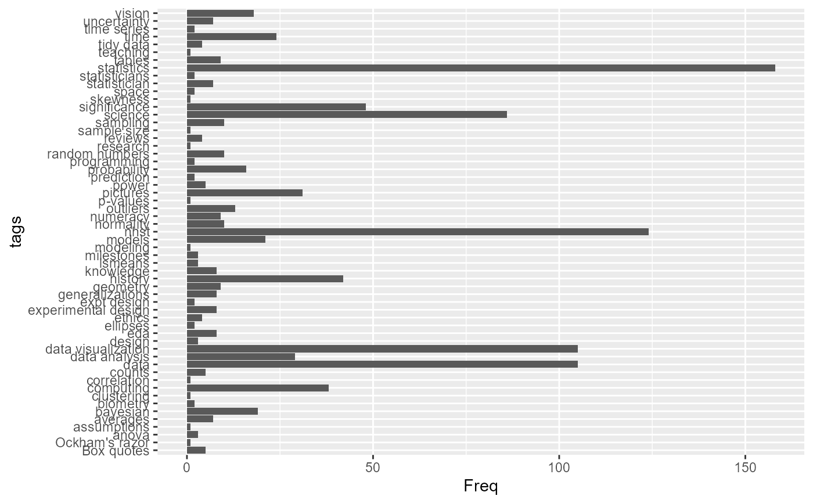
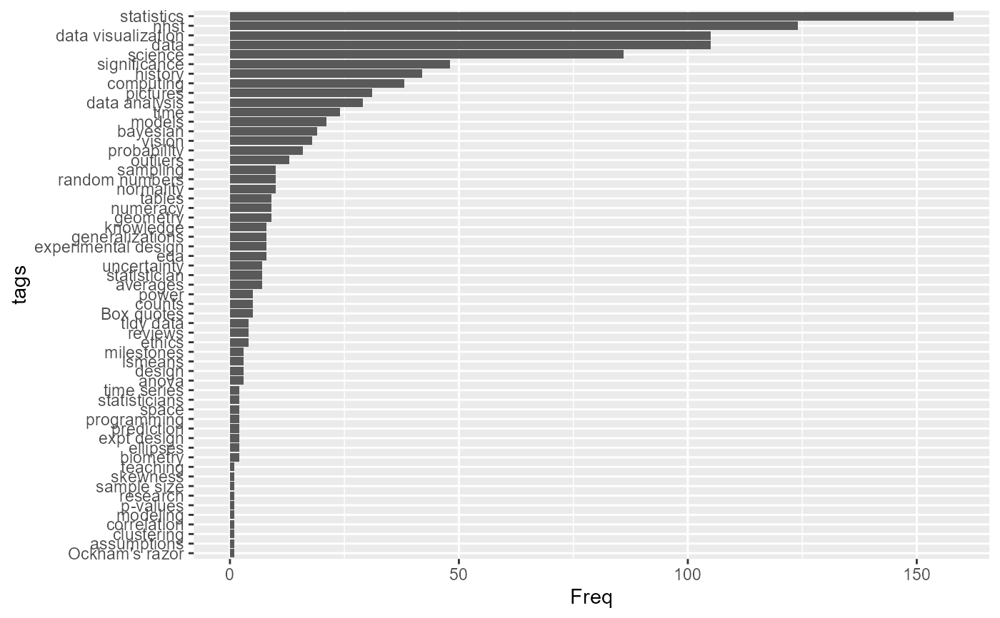

This function finds the unique tags of items in the quotes database and returns them as vector or a one-way table giving their frequencies.
Value
Returns either a vector of tags in the quotes database or a one-way frequency table of the number of quotes for each tag.
Examples
quote_tags()
#> [1] "Box quotes" "anova" "assumptions"
#> [4] "averages" "bayesian" "biometry"
#> [7] "computing" "correlation" "counts"
#> [10] "data" "data analysis" "data visualization"
#> [13] "design" "eda" "ellipses"
#> [16] "ethics" "experimental design" "expt design"
#> [19] "generalizations" "geometry" "history"
#> [22] "knowledge" "lsmeans" "milestones"
#> [25] "models" "nhst" "normality"
#> [28] "numeracy" "outliers" "p-values"
#> [31] "pictures" "power" "probability"
#> [34] "random numbers" "research" "reviews"
#> [37] "sample size" "sampling" "science"
#> [40] "significance" "skewness" "statistician"
#> [43] "statisticians" "statistics" "tables"
#> [46] "teaching" "tidy data" "time"
#> [49] "time series" "uncertainty" "vision"
quote_tags(table=TRUE)
#> tags
#> Box quotes anova assumptions averages
#> 5 3 1 7
#> bayesian biometry computing correlation
#> 18 2 38 1
#> counts data data analysis data visualization
#> 5 104 27 102
#> design eda ellipses ethics
#> 3 8 2 4
#> experimental design expt design generalizations geometry
#> 8 2 8 9
#> history knowledge lsmeans milestones
#> 42 8 3 3
#> models nhst normality numeracy
#> 21 124 9 9
#> outliers p-values pictures power
#> 13 1 31 5
#> probability random numbers research reviews
#> 16 10 1 4
#> sample size sampling science significance
#> 1 10 80 48
#> skewness statistician statisticians statistics
#> 1 8 2 157
#> tables teaching tidy data time
#> 9 1 4 20
#> time series uncertainty vision
#> 2 7 18
library(ggplot2)
qt <- quote_tags(table=TRUE)
qtdf <-as.data.frame(qt)
# bar plot of frequencies
ggplot2::ggplot(data=qtdf, aes(x=Freq, y=tags)) +
geom_bar(stat = "identity")

# Sort tags by frequency
qtdf |>
dplyr::mutate(tags = forcats::fct_reorder(tags, Freq)) |>
ggplot2::ggplot(aes(x=Freq, y=tags)) +
geom_bar(stat = "identity")
